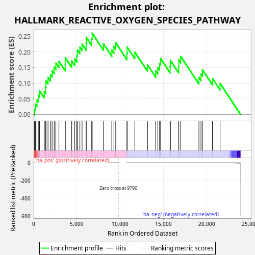
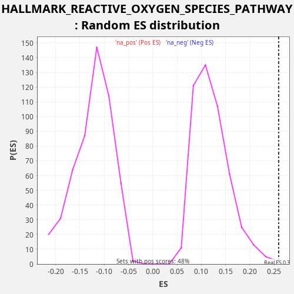

| Dataset | CCLE |
| Phenotype | NoPhenotypeAvailable |
| Upregulated in class | na_pos |
| GeneSet | HALLMARK_REACTIVE_OXYGEN_SPECIES_PATHWAY |
| Enrichment Score (ES) | 0.25924858 |
| Normalized Enrichment Score (NES) | 2.14003 |
| Nominal p-value | 0.0020833334 |
| FDR q-value | 0.003520969 |
| FWER p-Value | 0.041 |

| SYMBOL | RANK IN GENE LIST | RANK METRIC SCORE | RUNNING ES | CORE ENRICHMENT | |
|---|---|---|---|---|---|
| 1 | GLRX | 94 | 1.609 | 0.0169 | Yes |
| 2 | ERCC2 | 202 | 0.338 | 0.0332 | Yes |
| 3 | FTL | 385 | 0.069 | 0.0464 | Yes |
| 4 | PFKP | 535 | 0.032 | 0.0610 | Yes |
| 5 | HMOX2 | 673 | 0.018 | 0.0761 | Yes |
| 6 | PRDX6 | 1227 | 0.004 | 0.0737 | Yes |
| 7 | OXSR1 | 1386 | 0.003 | 0.0879 | Yes |
| 8 | GPX3 | 1419 | 0.003 | 0.1074 | Yes |
| 9 | MGST1 | 1656 | 0.002 | 0.1184 | Yes |
| 10 | MSRA | 1947 | 0.001 | 0.1270 | Yes |
| 11 | GLRX2 | 2128 | 0.001 | 0.1403 | Yes |
| 12 | SOD1 | 2372 | 0.001 | 0.1510 | Yes |
| 13 | NQO1 | 2563 | 0.001 | 0.1638 | Yes |
| 14 | ATOX1 | 2918 | 0.000 | 0.1698 | Yes |
| 15 | TXNRD1 | 3640 | 0.000 | 0.1604 | Yes |
| 16 | EGLN2 | 3646 | 0.000 | 0.1810 | Yes |
| 17 | PDLIM1 | 4394 | 0.000 | 0.1705 | Yes |
| 18 | NDUFA6 | 4745 | 0.000 | 0.1767 | Yes |
| 19 | TXN | 4979 | 0.000 | 0.1877 | Yes |
| 20 | NDUFB4 | 5047 | 0.000 | 0.2057 | Yes |
| 21 | STK25 | 5336 | 0.000 | 0.2145 | Yes |
| 22 | LAMTOR5 | 5589 | 0.000 | 0.2247 | Yes |
| 23 | MPO | 6058 | 0.000 | 0.2259 | Yes |
| 24 | G6PD | 6065 | 0.000 | 0.2465 | Yes |
| 25 | PRDX4 | 6698 | 0.000 | 0.2408 | Yes |
| 26 | SRXN1 | 6757 | 0.000 | 0.2592 | Yes |
| 27 | PRDX1 | 8060 | 0.000 | 0.2255 | No |
| 28 | GPX4 | 9020 | 0.000 | 0.2061 | No |
| 29 | SBNO2 | 9265 | 0.000 | 0.2167 | No |
| 30 | PTPA | 9474 | 0.000 | 0.2288 | No |
| 31 | PRDX2 | 10767 | -0.000 | 0.1954 | No |
| 32 | SCAF4 | 10790 | -0.000 | 0.2153 | No |
| 33 | NDUFS2 | 11678 | -0.000 | 0.1989 | No |
| 34 | PRNP | 13143 | -0.000 | 0.1583 | No |
| 35 | CAT | 14091 | -0.000 | 0.1395 | No |
| 36 | GCLC | 14334 | -0.000 | 0.1501 | No |
| 37 | CDKN2D | 14529 | -0.000 | 0.1628 | No |
| 38 | GCLM | 14656 | -0.000 | 0.1784 | No |
| 39 | IPCEF1 | 15744 | -0.000 | 0.1536 | No |
| 40 | JUNB | 15783 | -0.000 | 0.1728 | No |
| 41 | GSR | 16745 | -0.000 | 0.1534 | No |
| 42 | MBP | 16757 | -0.000 | 0.1737 | No |
| 43 | ABCC1 | 16974 | -0.000 | 0.1855 | No |
| 44 | HHEX | 19077 | -0.001 | 0.1182 | No |
| 45 | FES | 19315 | -0.001 | 0.1291 | No |
| 46 | SOD2 | 19480 | -0.002 | 0.1430 | No |
| 47 | LSP1 | 20637 | -0.005 | 0.1153 | No |
| 48 | TXNRD2 | 21521 | -0.015 | 0.0991 | No |

{kind=link}
{kind=link}